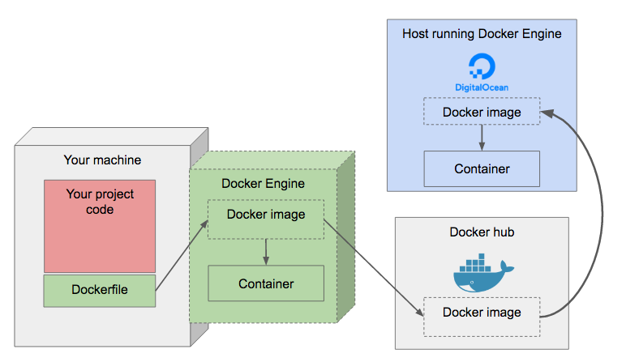

Table of Contents
1 TD Devops
1.1 Projet de demarrage
1.1.1 Forker/cloner le repository Git de base
- login:
group[N] - password:
group[N]pass
(vous pouvez changez le mdp de votre groupe dans les settings Gitlab si vous voulez).
- se rendre sur le projet Administrator/cours-devops-base.
- clicker sur le bouton "Fork" pour copier le projet dans votre groupe de travail gitlab.
- cloner votre projet Group[N]/cours-devops-base sur votre machine de dev.
git clone <url du projet>
1.1.2 Rappels quelques commandes Git
Dans le repertoire du projet
git status # voir les modifications locales des fichiers du projet git commit -a # creer un nouveau commit avec toutes les modification locales git push origin <branch> # pousser les nouveaux commits crees localement sur le repository gitlab git pull # recuperer les nouveaux commits sur le serveur gitlab git <cmd> --help # aide pour n'importe quelle commande git
1.2 Docker sur le poste de developpement
1.2.1 Installer Docker CE
Exemple sur une VM Debian: Doc officielle
1.2.2 Docker worklflow


1.2.3 Image node de base
- aller sur le Docker Hub.
- trouver l'image officielle Node.
- creer un fichier Dockerfile dans le projet, basé sur l'image officielle node pour la version specifiee dans les tests.
- executer un shell node dans un container basé sur cette image.
- verifier que la version de Node est bien celle desiree.
Directives Dockerfile:
FROM <image:version>- base l'image construite sur une autre image Docker.
Commandes docker:
docker build <dir>- construit une image docker a partir du Dockerfile situe dans un repertoire.
- l'option
-t - permet d'affecter un tag (nom) a l'image.
- l'option
docker images- liste les images presentes sur le docker local.
docker rmi <image>- efface une image docker.
docker run <image>- cree et demarre un container base sur une image docker.
- l'option
-i - (interactive) garde le stdin du container ouvert et le connecte au stdin du terminal.
- l'option
-t - (tty) le stdin se comporte comme un terminal TTY.
- l'option
--name <name> - nomme le container (plus pratique pour l'arreter, etc).
- l'option
--rm - efface le container lorsque son execution se termine.
- l'option
-d - (daemon) detache le container du terminal.
- l'option
docker ps- liste les containers presents sur la plateforme docker locale.
- l'option
-a - liste les containers ayant termine leur execution.
- l'option
docker start <container>- demarre un container precedemment cree par
docker run. docker stop <container>- arrete un container.
docker rm <container>- efface un container.
Commande Node:
process.version- affiche la version courante de node.
1.2.4 Image de developpement
- inclure les sources du serveur dans l'image du projet.
- executer un shell bash dans un container base sur l'image pour verifier que les sources sont bien incluses dans l'image.
- installer les dependances node dans l'image du projet.
- executer un shell bash dans un container base sur l'image pour verifier que les dependances sont bien incluses dans l'image.
- demarrer le serveur node automatiquement au lancement du container.
- lancer le container (sans surcharger la commande de demarrage, et en publiant le port 3000 sur localhost) pour verifier que le serveur est bien demarre.
- charger http://localhost:3000 dans un navigateur (ou CURL) pour verifier que le serveur repond correctement.
- verifier les autres routes du serveur (
/quotes/n/1,/quotes/random).
- verifier les autres routes du serveur (
Directives Dockerfile:
COPY <src> <dst>- copie tout le contenu du repertoire <src> de la machine hote (relatif au Dockerfile), dans le repertoire <dst> du file system de l'image docker.
WORKDIR <dir>- change le repertoire courant dans le file system de l'image docker (~
cd <dir>).- affecte les directives suivantes du Dockerfile.
- les commandes executees dans les containers seront egalement lancees depuis ce repertoire.
RUN <cmd arg...>- execute une commande, durant la construction de l'image, dans le file system de l'image.
CMD ["<cmd>", "<arg1>", "<arg2>", ...]- definit la commande par defaut executee au lancement d'un container.
- eg.
CMD ["echo", "toto"]- il faut passer un tableau de Strings separees par des virgules !
- eg.
Commande docker:
docker run <image> <cmd>- execute un container base sur <image>, en remplacement la commande par defaut par <cmd>.
- l'option
-p <port-container>:<port-hote> - permet de publier un port TCP du container sur la machine hote.
- l'option
Commandes node:
npm install- installe les dependances node decrites dans le
package.jsondu projet.- les dependances sont installees dans le repertoire
node_modulesa la racine du projet.
- les dependances sont installees dans le repertoire
npm start- demarre le serveur node.
1.2.5 Setup de developpement
- ajouter
nodemonau dependances de developpement du projet.- la commande
nodemonpermet de relancer le serveur node lorsqu'un de ses fichiers source change.
- la commande
- reconstruire l'image.
- executer un container de developpement, en montant le repertoire du projet sur la machine hote comme un volume dans le container, de sorte que les sources en cours d'edition soient visibles dans le container.
- lancer le serveur dans le container avec nodemon.
- verifier que lorsqu'un fichier source est modifie, le serveur redemarre dans le container.
Commandes docker:
docker run <image> <cmd>- l'option
-v <repertoire-hote>:<repertoire-container> - permet de "monter" un repertoire de la machine hote a la place d'un repertoire dans le container. Le container peut ainsi "voir" le contenu d'un repertoire de la machine hote.
- l'option
Commandes node:
npm install --save-dev <package>- installe une dependance de developpement et la rajoute au
package.jsondu projet. ./node_modules/.bin/nodemon .- execute le serveur node du projet, le redemarre si une source est modifiee.
1.2.6 Tests
- executer les tests unitaires du projet dans un nouveau container.
- lancer un container de developpement (cf. point precedent) et verifier qu'on peut lancer les tests sur les sources en cours de developpement.
Commandes node:
npm run test- execute les tests unitaires du projet.
npm run test -- -w- (watch) re-lance les tests a chaque changement des sources.